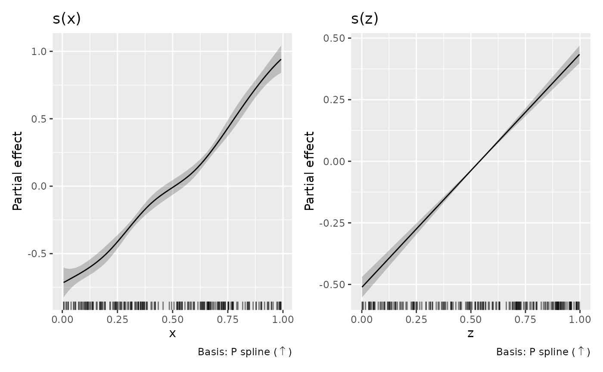
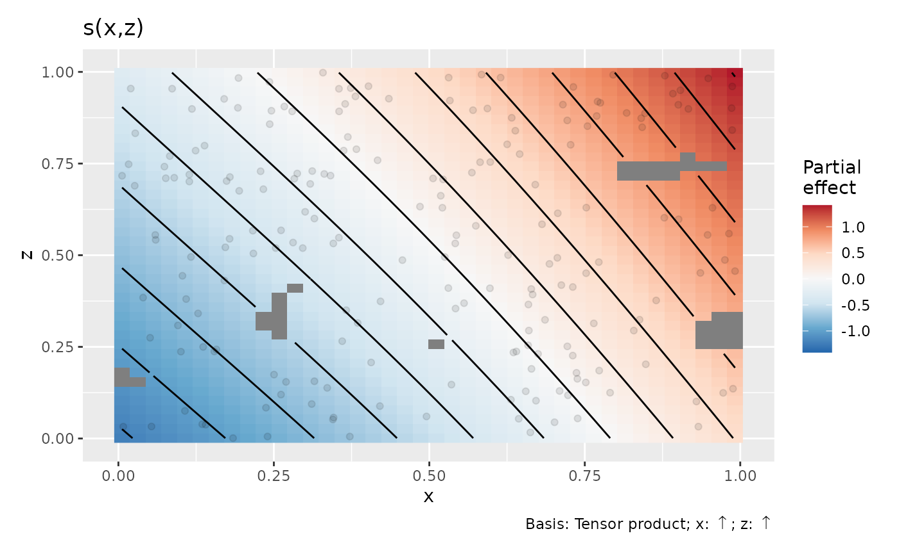

Working with shape-constrained additive models
Source:vignettes/articles/scam-support.Rmd
scam-support.Rmdgratia supports the 24 univariate and 17 bivariate smooth
constructors in scam 1.2-22, including cyclic margins, endpoint
constraints, local constraints, by smooths and smooth
interactions. Ordinary mgcv smooths fitted through scam()
are also supported. The same fitted coefficient mapping is used for
smooth estimates, bases, derivatives, predictions and sampled
smooths.
library("mgcv")
library("scam")
library("gratia")
set.seed(46)
d <- data.frame(x = runif(200), z = runif(200))
d$y <- exp(d$x) + d$z + rnorm(nrow(d), sd = 0.15)
m <- scam(y ~ s(x, bs = "mpi", k = 8) + s(z, bs = "mpi", k = 8),
data = d, not.exp = TRUE)
draw(m)
Fitted functions and native plots
Plot captions describe basis and shape separately. Increasing and
decreasing constraints use arrows; tensor captions name the covariate
for each constraint. Local constraints show their fitted change point.
These captions are also available when drawing saved
smooth_estimates(). The .type column and
smooth_type() retain compact ASCII labels such as
P spline (inc) and Tensor (inc, free).
By default, draw() retains the fitted function’s
centring. Evaluating a smooth on a different grid therefore evaluates
the same function. This agrees with scam’s univariate plots. Its
bivariate plots instead subtract the mean of the evaluated surface. Use
centre = "plot" to match that convention; both estimates
and their covariance receive the same centring operation.
assemble() accepts the same argument. Match grids and
exclusion distances when comparing plots from the two packages.
b <- scam(y ~ s(x, z, bs = "tedmi", k = c(5, 5)), data = d,
not.exp = TRUE)
draw(b, centre = "plot", n_2d = 40)
scam’s default univariate limits use two standard errors; gratia’s
default 95% normal limits use qnorm(0.975). Some scam
smooth classes also use a different coefficient gradient for the
displayed function and its standard error. gratia computes uncertainty
for the actual function it returns, using its coefficient gradient. This
can produce different limits even when the fitted curves agree.
Conditional uncertainty and sampled functions
Pointwise intervals, simultaneous smooth bands, smooth derivatives
and contrasts use scam’s covariance for the transformed coefficients
(Vp.t, or Ve.t with
frequentist = TRUE). These are local Gaussian or delta
approximations, conditional on the fitted smoothing parameters.
Including intercept uncertainty is controlled by
overall_uncertainty.
e <- smooth_estimates(m, overall_uncertainty = FALSE)
e <- add_confint(e)
head(e)
#> # A tibble: 6 × 9
#> .smooth .type .by .estimate .se x z .lower_ci .upper_ci
#> <chr> <chr> <chr> <dbl> <dbl> <dbl> <dbl> <dbl> <dbl>
#> 1 s(x) P spline (in… NA -0.714 0.0561 0.00591 NA -0.824 -0.604
#> 2 s(x) P spline (in… NA -0.705 0.0490 0.0159 NA -0.801 -0.609
#> 3 s(x) P spline (in… NA -0.696 0.0431 0.0258 NA -0.781 -0.612
#> 4 s(x) P spline (in… NA -0.687 0.0383 0.0358 NA -0.762 -0.612
#> 5 s(x) P spline (in… NA -0.678 0.0346 0.0457 NA -0.746 -0.611
#> 6 s(x) P spline (in… NA -0.669 0.0318 0.0557 NA -0.732 -0.607
derivatives(m, select = "s(x)")
#> # A tibble: 100 × 9
#> .smooth .by .fs .derivative .se .crit .lower_ci .upper_ci x
#> <chr> <chr> <chr> <dbl> <dbl> <dbl> <dbl> <dbl> <dbl>
#> 1 s(x) NA NA 0.901 0.963 1.96 -0.986 2.79 0.00591
#> 2 s(x) NA NA 0.895 0.865 1.96 -0.800 2.59 0.0159
#> 3 s(x) NA NA 0.893 0.774 1.96 -0.625 2.41 0.0258
#> 4 s(x) NA NA 0.895 0.692 1.96 -0.462 2.25 0.0358
#> 5 s(x) NA NA 0.902 0.619 1.96 -0.311 2.11 0.0457
#> 6 s(x) NA NA 0.914 0.553 1.96 -0.171 2.00 0.0557
#> 7 s(x) NA NA 0.930 0.496 1.96 -0.0434 1.90 0.0657
#> 8 s(x) NA NA 0.950 0.448 1.96 0.0730 1.83 0.0756
#> 9 s(x) NA NA 0.975 0.406 1.96 0.179 1.77 0.0856
#> 10 s(x) NA NA 1.01 0.372 1.96 0.276 1.73 0.0955
#> # ℹ 90 more rows
confint(m, parm = "s(x)", type = "simultaneous", seed = 53)
#> # A tibble: 100 × 9
#> .smooth .type .by x .estimate .se .crit .lower_ci .upper_ci
#> <chr> <chr> <chr> <dbl> <dbl> <dbl> <dbl> <dbl> <dbl>
#> 1 s(x) P spline (i… NA 0.00591 -0.714 0.0561 2.85 -0.874 -0.554
#> 2 s(x) P spline (i… NA 0.0159 -0.705 0.0490 2.85 -0.845 -0.565
#> 3 s(x) P spline (i… NA 0.0258 -0.696 0.0431 2.85 -0.819 -0.573
#> 4 s(x) P spline (i… NA 0.0358 -0.687 0.0383 2.85 -0.796 -0.578
#> 5 s(x) P spline (i… NA 0.0457 -0.678 0.0346 2.85 -0.777 -0.580
#> 6 s(x) P spline (i… NA 0.0557 -0.669 0.0318 2.85 -0.760 -0.578
#> 7 s(x) P spline (i… NA 0.0657 -0.660 0.0300 2.85 -0.745 -0.575
#> 8 s(x) P spline (i… NA 0.0756 -0.651 0.0288 2.85 -0.733 -0.568
#> 9 s(x) P spline (i… NA 0.0856 -0.641 0.0283 2.85 -0.722 -0.560
#> 10 s(x) P spline (i… NA 0.0955 -0.631 0.0281 2.85 -0.712 -0.551
#> # ℹ 90 more rowsCoefficient sampling uses a different approximation: draw a Gaussian
vector in the unrestricted fitting coordinates using Vp (or
Ve), then apply the positivity transformation used in the
fit. This preserves the fitted shape constraints. This is a Gaussian
approximation in fitting coordinates, rather than an exact constrained
posterior. Because the transformation is nonlinear, these samples need
not have the mean or covariance used for analytic intervals. Individual
analytic interval endpoints need not satisfy the shape constraint.
Fitted, smooth, derivative and response sampling functions project
these same transformed coefficient draws.
response_derivatives() also uses them with its default
uncertainty = "simulation";
uncertainty = "delta" instead uses the local
transformed-coefficient covariance.
draws <- gaussian_draws(m, n_draws = 100, seed = 54)
samples <- smooth_samples(m, n_draws = 5, seed = 55)
head(samples)
#> # A tibble: 6 × 9
#> .smooth .term .type .by .row .draw .value x z
#> <chr> <chr> <chr> <chr> <int> <int> <dbl> <dbl> <dbl>
#> 1 s(x) s(x) P spline (inc) NA 1 1 -1.00 0.00591 NA
#> 2 s(x) s(x) P spline (inc) NA 1 2 -0.853 0.00591 NA
#> 3 s(x) s(x) P spline (inc) NA 1 3 -0.749 0.00591 NA
#> 4 s(x) s(x) P spline (inc) NA 1 4 -0.922 0.00591 NA
#> 5 s(x) s(x) P spline (inc) NA 1 5 -0.898 0.00591 NA
#> 6 s(x) s(x) P spline (inc) NA 2 1 -0.985 0.0109 NAmethod = "user" requires finite draws in the transformed
coordinates, with columns in coef(m) order and nonnegative
constrained coefficients.
gaussian_draws(m, parametrized = FALSE) returns
unrestricted draws for inspection; these cannot be supplied as
transformed draws. A singular positive semidefinite covariance is
supported. A materially indefinite covariance is rejected. When a very
large unrestricted variance causes the exponential transformation to
overflow, sampling reports an error; it does not truncate those draws.
Finite transformed draws from an appropriate alternative sampler can
still be supplied.
Other GAM operations
Supported methods include model summaries and term extraction,
parametric effects, fitted and conditional predictions, smooth
differences, analytic response derivatives, accumulated local effects,
residual helpers, concurvity, penalties and response diagnostics.
lp_matrix() and model.matrix() return a design
whose columns match coef(m). Formula expressions retain
their fitted prediction parameters, formula offsets are evaluated on new
data, and training predictions also retain an offset
argument used in fitting. Missing-row handling is shared across these
methods.
Likelihood evaluation and LOO/WAIC use the supported
independent-response family adapters, conditional on smoothing and other
fitted family parameters. They use the same coefficient sampling
approximation described above. variance_comp() reports
response scale divided by smoothing parameters; these ratios describe
penalties on unrestricted fitting parameters. They are not Gaussian
variances of the transformed smooth coefficients, and their confidence
limits are unavailable.
For Gaussian identity-link fits with AR1 dependence, response
simulation uses the fitted correlation and AR.start series
boundaries, including observation weights. It requires the fitting
observations: a joint correlation structure for arbitrary new data is
not defined. Other families with scam’s working AR1 correction do not
automatically have a joint response simulator. Independent pointwise
likelihood adapters reject correlated fits.
GCV and UBRE fits do not supply the smoothing-parameter covariance
needed for unconditional = TRUE, unconditional EDF, or
likelihood-based confidence limits for variance components. MH and INLA
coefficient sampling are also unavailable.
model_edf(type = "unconditional") follows the shared GAM
convention: it warns and returns standard EDF when the correction is
missing. Automatic interval_method = "shape" integration
remains specific to supported scasm smooths;
shape_intervals() can be used explicitly on supplied
estimates and grids when its named shape restrictions apply.